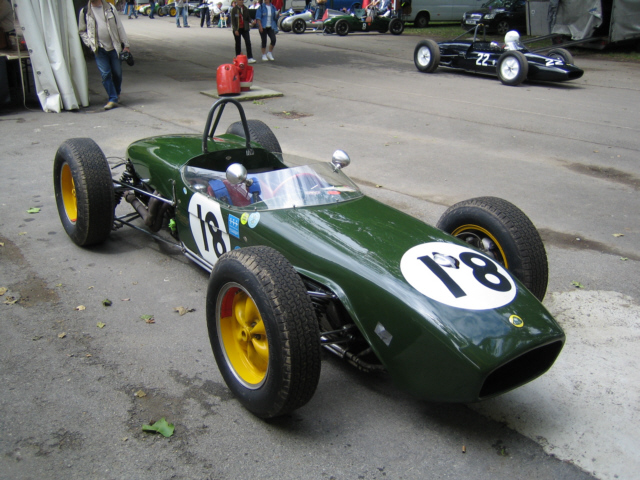

Történet
Egyszerű
Részletes
Kialakulása
Miután megszülettek az új technikai csodák, az autók, az emberek hamar felfedezték az autóversenyzés örömeit. Az első verseny után nem sokkal, 1906-ban, az első nagydíjat is megrendezték. Nyertese a Renault gyár alkalmazottja, a magyar származású Szisz Ferenc volt. Egy évvel később megnyílt az első versenypálya, a Brooklands. 1911-ben a másik földrészen először rendezték meg a legendás Indy 500-at. Az autóversenyzési láz az I. világháború miatt egy darabig szünetelt. 1919-ben újraéledtek a versenypályák, majd 1925-ben megnyílt Belgiumban Spa-Francorchamps. Ebben az évben született az első kísérlet arra, hogy a versenyeket egy kerek sorozattá fűzzék össze, amely autógyártóknak szólt, s ezt végül az Alfa Romeo nyerte meg. 1934-ben a német Mercedes és Auto Union beszállásával új fejezet vette kezdetét. A Mercedes versenyzője, Rudolf Caracciola nyerte meg az első Európa-bajnokságot, 1935-ben. A legyőzhetetlen német autók uralmát csak egy másik rendkívüli képességekkel megáldott versenyző, az Alfa Romeós Tazio Nuvolari volt képes megállítani. Az 1936-os magyar nagydíjat (a Népligetben) is ő nyerte. Az autóversenyzés második aranykora a második világháború kitörésével ért véget. 1946-ban megalakult a nemzetközi automobil szövetség, vagyis az FIA. A szövetség új keretbe foglalta az autóversenyzést, és az új szabálynak, vagyis formulának az 1-es számot adták. Eleinte csupán egymástól független Grand Prix-k kerültek megrendezésre, majd 1950-ben elindult a világ legnagyobb, legismertebb szériája, a Formula-1. Az első versenynek egy második világháborús repülőtér, Silverstone adott otthont.
Az 1950-es évek
Az 1950-es évek Formula-1 világában Giuseppe Farina nyerte az első világbajnokságot Alfa Romeóval, majd Juan Manuel Fangio dominált öt világbajnoki címmel (1951, 1954-1957). Bár Stirling Moss sosem lett világbajnok, az egyik legjobb versenyzőnek számít. Alberto Ascari a Ferrari színeiben két bajnokságot nyert (1952, 1953). A gyári csapatok - Alfa Romeo, Ferrari, Mercedes, Maserati - uralták az évtizedet, 1958-ban pedig megalakult a konstruktőri világbajnokság, melyet a Vanwall nyert. Az 1950-es évek autói eleinte keskeny gumiabroncsokkal és kis köbcentis motorokkal versenyeztek, majd 2,5 literes motorokra váltottak, ami hozzájárult a Mercedes visszatéréséhez, mielőtt a Le Mans-i tragédia miatt kilépett a sportból.
Az 1960-as évek
Az 1960-as években megjelentek a kisebb brit magáncsapatok, mint a Vanwall, a Cooper, a Lotus és a BRM, amelyek külső motorgyártókra támaszkodtak. Elterjedtek a karcsú, „szivar” alakú autók, melyek 220 lóerős teljesítménnyel és maximum 3000 cm³ szívómotorral versenyeztek. Az évtizedben hirdetések is megjelentek a sportágban. Jack Brabham, Phil Hill, Graham Hill, Jim Clark, John Surtees, Denny Hulme és Jackie Stewart nyertek világbajnoki címeket. A Lotus háromszor, a Brabham és a Ferrari kétszer, a Cooper, a BRM és a Matra egyszer nyerték meg a konstruktőri bajnokságot.
Az 1970-es évek
1970 és 1982 között a Ford-Cosworth motor dominált, 155 győzelmet hozva, míg a Ferrari volt az egyetlen, amely versenyképes alternatívát tudott kínálni. A Maserati, Weslake, Honda, BRM és Brabham-Alfa Romeo csak néhány győzelmet arattak. Ekkor kezdték átalakítani a hosszú pályákat, mint a Nürburgring és Spa-Francorchamps, a biztonság növelése érdekében. Niki Lauda súlyos balesete után a német nagydíjat a Hockenheimringre helyezték át. Az évtized végén technikai újítások, például a nagyobb leszorítóerőt biztosító „Ground Effect” autók jelentek meg, és különleges konstrukciók születtek, mint a ventilátoros Brabham BT46 és a hatkerekű Tyrrell P34. Ezeket a megoldásokat hamar betiltották. A Renault 1977-ben mutatta be a turbómotorokat, és az első turbós győzelem 1979-ben született.
Az 1980-as évek
1983-tól a turbómotorok domináltak a Formula-1-ben, 1000 lóerő körüli teljesítményükkel kiszorítva a szívómotorokat. A BMW 1984-ben készítette a legerősebb motort, melynek teljesítménye 1400 lóerő volt, de magas fogyasztása és megbízhatatlansága miatt nem vált sikeressé. 1989-ben betiltották a turbófeltöltőket, és két évnyi átmenet után visszatértek a szívómotorokhoz, melyeknek maximális hengerűrtartalma 3500 cm³ volt. A Renault motorjainak fordulatszáma elérte a 12 000 rpm-t. Az 1980-as évek legsikeresebb versenyzői a három világbajnoki címet nyert Nelson Piquet és Alain Prost voltak, mindketten háromszor nyertek. Egy-egy címet szerzett Alan Jones, Keke Rosberg, Niki Lauda és Ayrton Senna. A Williams és McLaren négy-négy világbajnoki címet szerzett, míg a Ferrari két címet nyert.

Az 1990-es évek
Az 1990-es évek elején az elektronikus segédeszközök (kipörgésgátló, ABS, aktív felfüggesztés) engedélyezettek voltak, de 1994-re betiltották őket a balesetek után. 1995-re a motorok maximális hengerűrtartalmát 3000 cm³-re csökkentették, így a teljesítmény 750-ről 650 lóerőre csökkent. 1996-ra a Ferrari V12-es motorját V10-esre cserélte, és Michael Schumacher három versenyt nyert. Az évtized első két bajnokságát a McLaren és Ayrton Senna nyerte. 1992-ben és 1993-ban Nigel Mansell és Alain Prost domináltak a Williamsszel. 1994-ben Schumacher lett a bajnok, a Williams pedig a konstruktőri cím nyertese. 1995-ben ismét Schumacher és a Benetton nyert, 1996-ban Damon Hill, 1997-ben Jacques Villeneuve. 1998-ban a McLaren és Mika Häkkinen, 1999-ben ismét Häkkinen lett a bajnok, míg a Ferrari konstruktőri címet szerzett.
A 2000-es évek
Ebben az évtizedben Michael Schumacher és a Ferrari öt egymást követő évben (2000-2004) uralták a Formula-1-et, több rekordot is felállítva. 2002-ben Schumacher minden versenyen dobogós helyen végzett, és pályafutása során 91 nagydíjat nyert. A csapat és a versenyző sikerének köszönhetően az FIA szabályokat változtatott, például betiltották a csapatutasítást a 2002-es osztrák nagydíj után. Schumacher bajnoki sorozata 2005-ben ért véget, amikor Fernando Alonso vette át a trónt. 2006-ban ismét Alonso lett a bajnok, majd Schumacher visszavonult. A 2007-es szezon botrányát a McLaren illegális adatlopása okozta, Kimi Räikkönen egy pont előnnyel nyert, a Ferrari pedig konstruktőri bajnok lett. 2003-ban megváltozott a pontrendszer, majd a műszaki szabályok is módosultak. 2005 után a Formula-1-ben csak egy gumiszállító maradt, 2006-tól pedig V8-as motorokat kellett használni. 2007-ben betiltották a kipörgésgátlókat, és 2008-ban Lewis Hamilton nyert, miközben a Ferrari szerezte meg a konstruktőri címet. 2009-ben jelentős szabálymódosításokkal csökkentették az autók leszorítóerejét, és visszahozták a slick gumikat. Jenson Button egyéni címét, míg a Brawn-Mercedes csapata a konstruktőri bajnoki címet nyerte. Az évtized végére a gyári csapatok, mint a Renault, BMW Sauber, Toyota, Honda és Ferrari uralták a bajnokságot, de a Honda, BMW és Toyota is kivonult a sportágból.
A 2010-es évek
Ebben az évtizedben Sebastian Vettel és a Red Bull Racing 2010 és 2013 között mindent megnyertek, amit csak lehetett. Fernando Alonso 2010-ben a Ferrari-hoz szerződött, de sose tudtak együtt világbajnokságot nyerni, így Alonso 2014 végén elhagyta az olaszokat, és 2015-ben visszatért a Hondával fuzionáló McLarenhez. A 2010-ben csatlakozó csapatok közül (Team Lotus/Caterham F1 Team, Virgin Racing/Manor F1 Team, Hispania Racing) csak a Marussia maradt életben, de 2014-ben ők is becsődöltek, és eladták a jogokat a brit Manor F1 Team-nek.
2015-ben a Lotus F1 Team szintén anyagi problémákkal küzdött, de végül sikerült eladni egy nagy visszatérő gyári csapatnak, a Renault F1-nek. Ebben az évtizedben versenykörülmények között (2014-es Formula-1 japán nagydíj) életét vesztette a francia Jules Bianchi.
2014-ben a Formula-1 átváltott V8-as erőforrásról V6-os erőforrásra (Hibrid korszak). Jelenleg a Mercedes AMG F1 uralja a F1-et. Lewis Hamilton 2013-ban csatlakozott a németekhez, és együtt bezsebelték a 2014-es és 2015-ös világbajnoki trófeákat. Jelenállás szerint a Mercedesé a legjobb erőforrás, de folyamatosan zárkózik fel mögé a Ferrari, addig a Renault és főleg a Honda rettentően szenvednek a hibrid erőforrásukkal.
Hamarosan az Nemzetközi Automobil Szövetség eldönti, hogy 2017-től, vagy 2018-tól kapjuk meg az új Formula-1-et. Az eredeti elképzelés szerint 2017-től egy merőben más Forma-1-et fogunk látni. A jelenlegi V6-os turbófeltöltéses, fékenergia visszatáplálásos, a turbófeltöltő többletenergiáját is visszatápláló, hibrides motorformula érintetlen marad, amiről már korábban megállapodtak a felek (ezen felül a Ferrari és a Mercedes HCCI gyújtástechnológiát, öngyulladás és szikragyújtás keverékét használja, a ciklusonként engedélyezett 5 szikragyújtás mellett), de az aerodinamika, a szabályok és a gumik is egy totális átalakuláson mennek keresztül. És akkor még nem volt szó a pilótafülkék extra védelméről, az úgynevezett bumerángmegoldásról, vagy a zárt pilótafülkéről. Igaz, a jelenlegi állás szerint ezt a kérdést külön kezeli az FIA.
2018-ban a következő változások léptek életbe: bevezették a fejvédő "glóriát", ill. hálot, megszűntek a cápauszonyok és a hátsó T szárnyak az autókon, illetve a kipufogó fölötti köralakú terelőelem. A versenyzők 3 motort használhatnak egy szezonban, megjelent a hiperlágy, angolul:"hypersoft" és a szuper kemény " superhard" gumikeverék. Megszűnt az első kerékfelfüggesztés olyan beállítási lehetősége, ami lehetővé tette a kocsimagasság változását, és ezzel befolyásolta a légellenállást. Továbbá a rajtrács lányok, vagy "gridgirl"-ök szerepét fiatal, a Formula-1 felé vezető út elején járó autóversenyző gyerekek vették át.
2019-től csak 5 gumikeverék érhető el, 3-3 különböző minden versenyhétvégén. Ezeket keménységük alapján egy C1-C5ig terjedő skálán rangsorolják.
Előzmények
| Év | Események |
|---|---|
| {{ el.ev }} | {{ el.esemenyek }} |
1950-es évek
| Év | Események |
|---|---|
| {{ el.ev }} | {{ el.esemenyek }} |
1960-as évek
| Év | Események |
|---|---|
| {{ el.ev }} | {{ el.esemenyek }} |
1970-es évek
| Év | Események |
|---|---|
| {{ el.ev }} | {{ el.esemenyek }} |
1980-as évek
| Év | Események |
|---|---|
| {{ el.ev }} | {{ el.esemenyek }} |
1990-es évek
| Év | Események |
|---|---|
| {{ el.ev }} | {{ el.esemenyek }} |
2000-es évek
| Év | Események |
|---|---|
| {{ el.ev }} | {{ el.esemenyek }} |